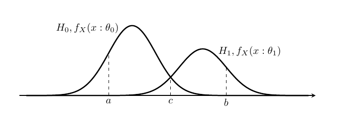

統計的仮説検定
仮説検定(hypothesis testing)とは,関心のある仮説が発生事象に 因果関係があるかどうかを判定することである. ここで,仮説は標本の母集団の母数や確率分布である. 仮説検定の要点は,検証したい仮説と排他な仮説を設定して, これを検証し,関心のある仮説が成立するかを判断する. 数学で"何かが成立する"を証明する際に,"反例がある"と証明が成立しないのと同じ考えで, 排他な仮説の確率が高いということは,仮説に反例があるという確率が高いと判断して, 対象の仮説が成立しないと考える.
無帰仮説と対立仮説
仮説
仮説検定の仮説とは,標本の母集団の母数のことである. 通常,統計量を仮説として用いて,それを検定統計量(test statistic)という.
帰無仮説
帰無仮説(null hypothesis)は無価値な仮説という意味で, 検定したい仮説が成立するために,成立してほしくない仮説で, 帰無仮説が棄却することで,対象の仮説の正しさの確率を高める. 検定したい仮説を対立する仮説が採用される.\(H_0\)と表される.
対立仮説
対立仮説(alternative hypothesis)は帰無仮説と対立する仮説で, 帰無仮説が棄却したときに成立する仮説である.こちらが,興味のある対象の仮説になる. \(H_1\)と表される.
検定の設定
確率変数列 \(\{X_i\} _{i \in \mathbb{N} _+,i \leq n}\)を, 確率密度関数\(f _X(x:\theta)\)からの無作為標本とする. この確率密度関数のパラメータが属するパラメータ空間を\(\Theta\)とする. この空間を\(\Theta _1 = \Theta \backslash \Theta_0\)と分割する. ここで\(\theta \in \Theta _0\)となる仮説を帰無仮説として, \(H_0 : \theta \in \Theta _0\)と表し, \(\theta \in \Theta _1\)ととなる仮説を対立仮説とし,\(H_1 : \theta \in \Theta _1\)と表す. \(\Theta _0, \Theta _1\)が一つの要素(シングルトン)のときは,単純仮説(simple hypothesis)といい, 複数の要素から構成されるときは,複合仮説(composite hypothesis)という.

帰無仮説のパラメータに従う確率密度関数を \(f_X(x:\theta_0)\), 対立仮説のパラメータに従う確率密度関数を \(f_X(x:\theta_1)\)とする. ここで,標本\(X_i\)から\(\theta\)が,\(\Theta _0, \Theta _1\)どちらに属するかを判定する問題が仮説検定である.
上図で,標本\(X_i\)が\(a\)の位置にあるなら \(H_0\)を支持し,\(b\)の位置にあるなら \(H_1\)を支持し, \(c\)の位置にあるなら判定を保留したいと考えたい.しかし,仮説検定では判断を保留すると言う態度を取らない. 標本空間\(\Omega\)の中に集合\(R,A=\Omega \backslash R\)を設定し,\(X_i \in R\)である時 対立仮説が成立すると設定する.
仮説検定方式
仮説検定方式(hypothesis testing procedure)とは,標本空間\(\Omega\)を帰無仮説\(H_0\)を棄却(reject)する空間と,受容(accept)する空間に分割し,設定を行うことである. \[ R = \{x \in \Omega | H_0を棄却する \} \\ A = \Omega \backslash R = \{x \in \Omega | H_0を受容する \} \] \(R\)を\(H _0\)の棄却域(rejection region),\(A\)を\(H _0\)の受容域(acceptance region)と言う. \(R,A\)を決定する,標本\(\{X_i\} _{i \in \mathbb{N} _+,i \leq n}\)に基づいた統計量\(T=T(\mathbf{X})\)を検定統計量と言う.